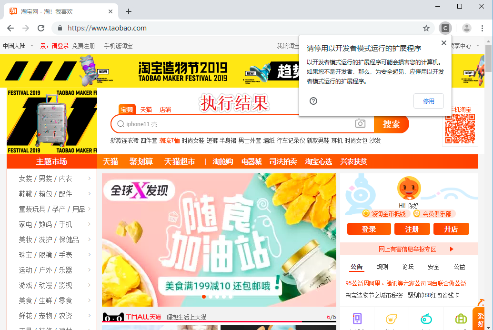

目录
Selenium 是一个用于Web应用程序测试的工具。Selenium测试直接运行在浏览器中，就像真正的用户在操作一样。
支持的浏览器包括IE（7, 8, 9, 10, 11），Mozilla Firefox，Safari，Google Chrome，Opera等。这个工具的主要功能包括：
测试与浏览器的兼容性——测试你的应用程序看是否能够很好得工作在不同浏览器和操作系统之上。
测试系统功能——创建回归测试检验软件功能和用户需求。支持自动录制动作和自动生成 .Net、Java、Perl等不同语言的测试脚本。- selenium模块在爬虫中的使用
- 概念：是一个基于浏览器自动化的模块。
- 爬虫之间的关联：
- 便捷的捕获到动态加载到的数据。（可见即可得）
- 实现模拟登陆
- 环境安装：pip install selenium
- 基本使用：
- 准备好某一款浏览器的驱动程序：http://chromedriver.storage.googleapis.com/index.html
- 版本的映射关系：https://blog.csdn.net/huilan_same/article/details/51896672
- 实例化某一款浏览器对象
- 动作链：
- 一系列连续的动作
- 在实现标签定位时，如果发现定位的标签是存在于iframe标签之中的，则在定位时必须执行一个
固定的操作：bro.switch_to.frame('id')
- 无头浏览器的操作：无可视化界面的浏览器
- PhantomJs:停止更新
- 谷歌无头浏览器
- 让selenium规避检测from time import sleep
from selenium import webdriver
# 后面是你的浏览器驱动位置，记得前面加r'','r'是防止字符转义的
driver = webdriver.Chrome(r'chromedriver.exe')
# 用get打开百度页面
driver.get("http://www.baidu.com")
# 查找页面的“设置”选项，并进行点击
driver.find_elements_by_link_text('设置')[0].click()
sleep(2)
# # 打开设置后找到“搜索设置”选项，设置为每页显示50条
driver.find_elements_by_link_text('搜索设置')[0].click()
sleep(2)
# 选中每页显示50条
m = driver.find_element_by_id('nr')
sleep(2)
m.find_element_by_xpath('//*[@id="nr"]/option[3]').click()
m.find_element_by_xpath('.//option[3]').click()
sleep(2)
# 点击保存设置
driver.find_elements_by_class_name("prefpanelgo")[0].click()
sleep(2)
# 处理弹出的警告页面 确定accept() 和 取消dismiss()
driver.switch_to_alert().accept()
sleep(2)
# 找到百度的输入框，并输入 美女
driver.find_element_by_id('kw').send_keys('美女')
sleep(2)
# 点击搜索按钮
driver.find_element_by_id('su').click()
sleep(2)
# 在打开的页面中找到“Selenium - 开源中国社区”，并打开这个页面
driver.find_elements_by_link_text('美女_百度图片')[0].click()
sleep(3)
# 关闭浏览器
driver.quit()from selenium import webdriver
from time import sleep
bro = webdriver.Chrome(executable_path='chromedriver.exe')
bro.get('https://www.jd.com/')
sleep(1)
#进行标签定位
search_input = bro.find_element_by_id('key')
search_input.send_keys('mac pro')
btn = bro.find_element_by_xpath('//*[@id="search"]/div/div[2]/button')
btn.click()
sleep(2)
#执行js
bro.execute_script('window.scrollTo(0,document.body.scrollHeight)')
sleep(2)
page_text = bro.page_source
print(page_text)
sleep(2)
bro.quit()#便捷的捕获到动态加载到的数据。（可见即可得）
from selenium import webdriver
from time import sleep
from lxml import etree
bro = webdriver.Chrome(executable_path='chromedriver.exe')
bro.get('http://125.35.6.84:81/xk/')
sleep(1)
page_text = bro.page_source
page_text_list = [page_text]
for i in range(3):
bro.find_element_by_id('pageIto_next').click()#点击下一页
sleep(1)
page_text_list.append(bro.page_source)
for page_text in page_text_list:
tree = etree.HTML(page_text)
li_list = tree.xpath('//ul[@id="gzlist"]/li')
for li in li_list:
title = li.xpath('./dl/@title')[0]
num = li.xpath('./ol/@title')[0]
print(title+':'+num)
sleep(2)
bro.quit()
#执行结果
江苏正东生物科技有限公司:苏妆20160159
吉林正德药业有限公司:吉妆20160011
湖北潜江制药股份有限公司:鄂妆20190003
深圳市发康堂中医药研究有限公司:粤妆20180101
洞玛生物技术（深圳）有限公司:粤妆20160644
领先（中国）生物科技有限公司:闽妆20170030
普洱联众生物资源开发有限公司:云妆20160023
珠海市富康源旅游用品有限公司:粤妆20180248
广州康又美化妆品有限公司:粤妆20160830
江苏西宏生物医药有限公司:苏妆20190023
广州市大研生物技术有限公司:粤妆20161133
广州玖宫研化生物科技有限公司:粤妆20160438
......省略"""
动作链：
- 一系列连续的动作
- 在实现标签定位时，如果发现定位的标签是存在于iframe标签之中的，则在定位时必须执行一个
"""
from selenium import webdriver
from time import sleep
from selenium.webdriver import ActionChains
bro = webdriver.Chrome(executable_path='chromedriver.exe')
bro.get('https://www.runoob.com/try/try.php?filename=jqueryui-api-droppable')
bro.switch_to.frame('iframeResult')
div_tag = bro.find_element_by_id('draggable')
#拖动= 点击+滑动
action = ActionChains(bro)
action.click_and_hold(div_tag)
for i in range(5):
#perform让动作链立即执行
action.move_by_offset(17,5).perform()
sleep(0.5)
action.release()
sleep(3)
bro.quit()#使用谷歌无头浏览器
from selenium import webdriver
from selenium.webdriver.chrome.options import Options
chrome_options = Options()
chrome_options.add_argument('--headless')
chrome_options.add_argument('--disable-gpu')
driver = webdriver.Chrome(r'chromedriver.exe',chrome_options=chrome_options)
driver.get('https://www.cnblogs.com/')
print(driver.page_source)
#执行结果
<!DOCTYPE html><html xmlns="http://www.w3.org/1999/xhtml" lang="zh-cn">
<head><script src="https://securepubads.g.doubleclick.net/gpt/pubads_impl_rendering_2019091201.js">
</script><script async="" src="https://www.google-analytics.com/analytics.js"></script>
<meta charset="utf-8" />
<meta name="viewport" content="width=device-width, initial-scale=1" />
<meta name="referrer" content="always" />
<title>博客园 - 开发者的网上家园</title>
.......................省略.......................
沪公网安备 31011502001144号</span></a></div>
</div>
</div>
</body>
</html> #如何规避selenium被检测
from selenium import webdriver
from selenium.webdriver import ChromeOptions
option = ChromeOptions()
option.add_experimental_option('excludeSwitches', ['enable-automation'])
driver = webdriver.Chrome(r'chromedriver.exe',options=option)
driver.get('https://www.taobao.com/')